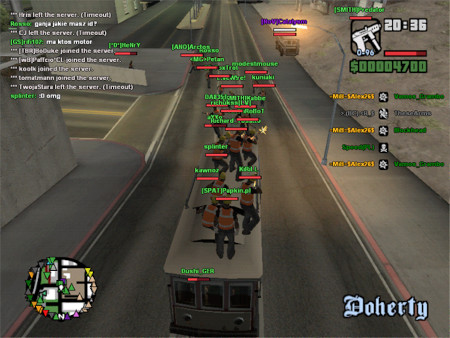

A origem e legado do SAMP
Mais que uma simples modificação, San Andreas Multiplayer é um marco na história dos jogos. Criado por fãs, ele transformou o GTA: San Andreas em uma experiência online duradoura que ainda pulsa em comunidades ativas ao redor do mundo. Leia esse texto e axplore agora a sua origem, evolução e o legado que mantém esse clássico vivo até hoje.
Grand Theft Auto: San Andreas, lançado em 2004 pela Rockstar Games, é um dos jogos mais influentes e populares da era dos consoles e computadores da década de 2000. Ambientado no fictício estado de San Andreas — uma representação livre da Califórnia e Nevada — o jogo narra a história de Carl "CJ" Johnson, um jovem que retorna à cidade de Los Santos após a morte de sua mãe, sendo rapidamente envolvido novamente pelo mundo do crime, das gangues e da corrupção. Com um mapa vasto, liberdade de ação e uma narrativa profunda, o jogo conquistou milhões de jogadores e permanece até hoje como um ícone da cultura gamer.
A popularidade de San Andreas foi tão grande que rapidamente surgiram modificações criadas pela comunidade, expandindo ainda mais a experiência do jogo original. Entre essas modificações, a mais notável foi o San Andreas Multiplayer, conhecido como SAMP. Lançado oficialmente em 2006, SAMP é uma modificação independente que permite a funcionalidade multiplayer em GTA: San Andreas, recurso inexistente na versão original do jogo. Desenvolvido por Kalcor (nome de usuário do programador principal) e sua equipe, o projeto teve início como uma alternativa ao já existente Multi Theft Auto (MTA), mas rapidamente se destacou por sua simplicidade, leveza e facilidade de personalização.
A proposta do SAMP era permitir que jogadores pudessem interagir em um mesmo servidor online, com liberdade para criar modos de jogo variados como Roleplay, Deathmatch, Freeroam, Corridas, e muitos outros. A modificação utiliza a linguagem de script PAWN, o que facilita o desenvolvimento de sistemas personalizados e modos de jogo complexos. Essa flexibilidade fez com que surgissem milhares de servidores únicos, muitos dos quais chegaram a ter comunidades dedicadas e com administrações estruturadas.
A história do SAMP está profundamente ligada à força da comunidade. Grande parte de seu sucesso se deve ao envolvimento direto de jogadores e desenvolvedores amadores que criaram conteúdos, scripts e tutoriais, mantendo a plataforma viva por quase duas décadas. Apesar de o desenvolvimento oficial ter diminuído com o tempo, a base de usuários permaneceu ativa, especialmente em regiões como América Latina e Leste Europeu, onde o SAMP continua sendo utilizado até hoje em larga escala.
SAMP é mais do que uma simples modificação; é um marco na história dos mods e na cultura dos jogos multiplayer. Ele representa a capacidade da comunidade de reinventar e prolongar a vida útil de um jogo originalmente projetado apenas para um jogador, transformando-o em uma plataforma social robusta e versátil. Com servidores customizados, modos variados e sistemas complexos criados por jogadores, SAMP se consolidou como uma experiência social marcante. Mesmo após quase duas décadas, mantém relevância, especialmente em países como o Brasil, onde ainda movimenta milhares de jogadores diariamente.